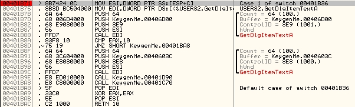
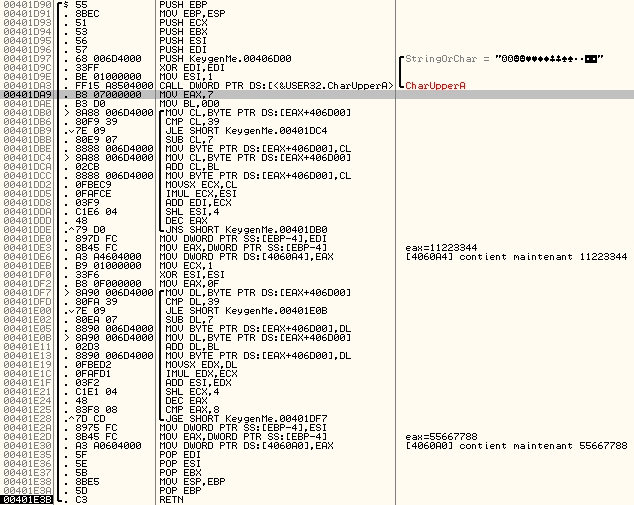
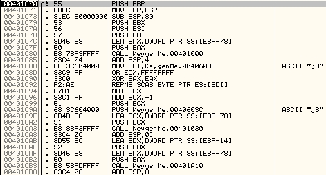
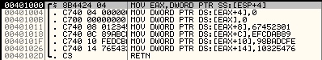
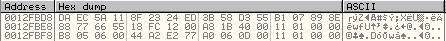
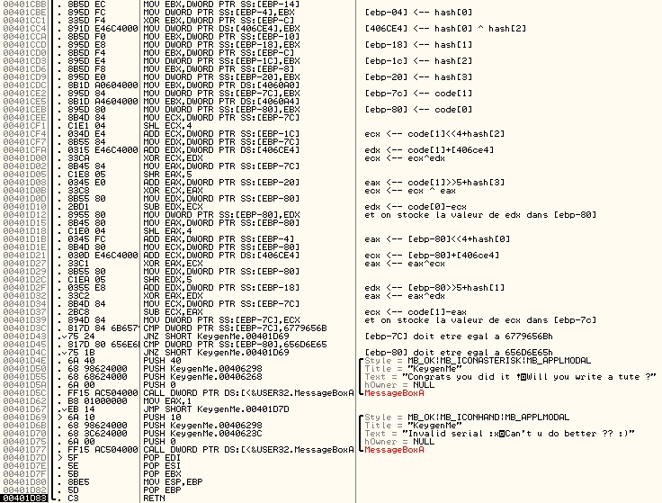

Ce KeygenMe est très intéressant pour commencer un peu la crypto. Il utilise des algorithmes connus. Le deuxième algorithme est légèrement modifié, mais ça ne le rend pas plus difficile à reverser pour autant.
Le programme est packé avec UPX. Pour l'unpacker, on tape simplement: upx -d KeygenMe.exe
et on obtient l'exe original, non compressé.
On ouvre le KeygenMe avec Olly, et on jette un coup d'oeil rapide au listing (c'est assez court). On trouve très facilement la routine qui va récupérer le nom et le serial. On pose donc un breakpoint à l'entrée de la routine, en .401B71: 
On remarque déjà l'appel à deux routines qui peuvent être très intéressantes: l'une en
.401D90 et l'autre en .401C70. Le premier appel à GetDlgItemTextA récupère le serial,
et le copie en .406D00. Le second appel récupère le nom, et le copie en .40603C.
cmp eax, 10h
jnz mauvais_serialLe serial doit donc faire 10h=16 caractères.
On lance ensuite le programme (F9), on entre un nom ( jB ),et un serial à la con ( 1122334455667788 ). Puis on appuie
sur 'OK'. Le breakpoint a bien fonctionné. On se retrouve en .401B71.
On trace avec F8, et on entre dans le premier call intéressant (.401D90) avec F7.On arrive ici:

La routine est très simple à comprendre en la traçant: le serial entré est mis en majuscules avec CharUpperA.
Puis les 8 premiers caractères du serial sont convertis en un dword, et stockés en [4060A4]. Les 8 derniers
caractères sont également convertis en un dword, et sont stockés en [4060A0].
On sort de la procédure, et on entre dans le second call: 
On entre dans le premier call, en .401000, pour voir un peu ce qui se passe:

Les choses sérieuses commencent. On reconnait l'initialisation typique d'un hash (MD, RipeMD ou SHA-1). Il faut tracer un peu plus loin pour connaître le hash utilisé.
Le call suivant n'a pas l'air très intéressant. On ne rentre pas dedans. Celui d'après par contre contient la routine de hash. Comme généralement les routines de hash sont assez longues, et que personne n'a envie de se faire mal à la tête en les analysant, on va passer cette routine également.
Le pricipal est de comprendre comment la procédure de hash est appellée. On remarque le push edx juste au dessus du
call KeygenMe.00401A10. C'est donc un paramètre de la fonction appellée.
A la sortie de la fonction, on jette un coup d'oeil au buffer pointé par ce paramètre: Ctrl + g --> ebp-14.
On voit ceci:

On reconnait alors le hash MD5 de 'jB': DAEC5A118F2324ED3B58D355B107898E. (Pour
reconnaitre les hash j'utilise CryptTool v1.2 de christal, très pratique).
On arrive à la partie la plus délicate du programme (rien de très compliqué toutefois). On récapitule avant d'aborder la routine:
[4060A4]=code[0]
[4060A0]=code[1]code comme un tableau de deux dwords.
Le hash se trouve à l'offset ebp-14. On a donc, en considérant hash comme un tableau de dwords également:
[ebp-14]=hash[0]
[ebp-10]=hash[1]
[ebp-0c]=hash[2]
[ebp-08]=hash[3]Voici la routine commentée: 
On note:sum=[406ce4]. On a donc:
[ebp-80]=code[0]-(code[1]<<4+hash[2]^code[1]+sum^code[1]>>5+hash[3])
[ebp-7c]=code[1]-([ebp-80]<<4+hash[0]^[ebp-80]+sum^[ebp-80]>>5+hash[1])et il faut que cela vérifie:
[ebp-80]=656D6E65h
[ebp-7C]=6779656BhCet algorithme ressemble fortement à du TEA, avec quelques différences toutefois:
hash[0]^hash[2], et pas à 9e3779b9h.Il faut maintenant reverser tout ça. On note y=[ebp-80] et z=[ebp-7c].
z=code[1]-(y<<4+hash[0]^y+sum^y>>5+hash[1])Comme y doit être égal à 656D6E65h, on a alors: code[1]=z+(y<<4+hash[0]^y+sum^y>>5+hash[1])
avec y=656D6E65h.
On en déduit:code[0]=y+(code[1]<<4+hash[2]^code[1]+sum^code[1]>>5+hash[3]). Ce qui donne, pour 'jB':
code[0]=0E49910Bh
code[1]=9902E4D9hLe serial est donc: 0E49910B9902E4D9. Et voilà, c'est terminé.